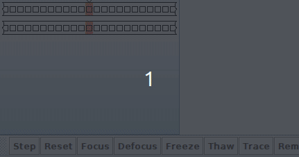
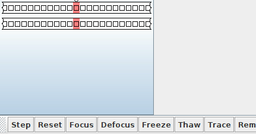

Homework 7: Turing Machines, Turing Enumerators, And Decidability (20 Points)
Chris Tralie
Problem 1 (3 Points)
Watch this video (Click here to read the associated paper), and explain using the Church-Turing thesis why the Powerpoint app is theoretically in violation of the Apple Store's app guidelines.
Problem 2 (3 Points)
We can show that Turing machines are at least as powerful as pushdown automata with the following series of reductions
- Pushdown automaton to multitape nondeterministic Turing machine, which has one tape for the input that only moves right, and one tape for the stack which is always at the edge of blanks
- Multitape nondeterministic Turing machine to single tape nondeterministic Turing machine, following a similar reduction for the deterministic case where we store all of the tapes on one separated by a delimeter # and we store where the tape heads are by putting a dot over each character
- Single tape nondeterministic Turing machine to multitape deterministic Turing machine using the reduction we talked about in class that uses 3 tapes: one for input, one for simulation of one branch, and another to store the branch.
- Multitape deterministic Turing machine to single tape deterministic Turing machine.
Actually, there's an even easier way if we recognize that all PDAs can be implemented with context free grammars, because we can create a nondeterministic Turing machine to enumerate all possible substitutions and accept if one of them happens to be our string. Regardless, we've shown that Turing machines are at least as powerful as PDAs, and we in fact know that they are more powerful because we've shown they can recognize certain languages that PDAs count.
However, if we have two stacks in our PDA, then the PDA becomes equally powerful to a Turing machine. Your job will be to prove this. It's straightforward to prove that Turing machines are at least as powerful as 2-stack PDAs with a minor tweak at step 1 that includes an additional tape for the second stack, so you don't need to bother proving that. But you do need to prove that any deterministic Turing machine can be reduced to a 2-stack PDA to complete the proof that they are equally powerful.
NOTE: As a corollary, this means that 3 stack PDAs are equally powerful as 2 stack PDAs, since 2 stack PDAs are already as powerful as Turing machines.
Problem 3 (5 Points)
Create a Turing enumerator that enumerates the language L = {w ∈ {a, b, c}* | w has an even number of a's}, in lexicographic order. In particular create a 2-tape turing machine with the "work tape" on the top and a "print tape" on the bottom, where the bottom tape has
An algorithm to do this counts in base 3 (where a=0, b=1, c=2) on the work tape. Every time a new string is completed on the work tape, count the number of a's to see if it's even, and print on the print tape if so. If the work tape overflows to the next place, reset to all a's with one more character than there was before
You can check that this is functioning properly by stepping through your machine with blank tapes to start. For example, here is what I get on my enumerator:
Here's a turbo charge through a bunch more iterations
Problem 4 (3 Points)
The above example points to an interesing general fact.
Show that for any infinite language L, L is decidable if and only if some Turing enumerator enumerates L in lexicographic order. You may use a high level description of any Turing machines at play. Note that you will have to prove two directions for the if and only if
- If some Turing enumerator enumerates L in lexicographic order, then L is decidable
- If L is decidable, then some Turing enumerator enumerates L in lexicographic order
For the first direction, when creating a decider, you can't assume any knowledge of the language other than what the enumerator tells you, so you have to tie your hands behind your back and just look at the strings that come out of the enumerator to decide whether a string is in the language. For example, if you wanted to check if the string bcc was in the language coming out of the enumerator in problem 3, how would you do so by just examining the above strings coming out in lexicographic order? When would you know that you could reject this string?
Problem 5 (3 Points)
Let's now dive into an important problem in the history of algorithms/computing: Hilbert's 10th problem. It was very surprising to mathematicians that a problem could be posed that might not be able to be solved at all in general in our universe. But there is a special case that's solvable, and we'll explore it in this problem. Let
\[f(x) = c_1 x^n + c_2x^{n-1} + ... + c_nx + c_{n+1} \]
be a single variable polynomial with at least one real root (i.e. a value of x that makes it 0). Let cmax be the largest absolute value of any coefficient ci. Show that each real root x of f(x) must exist in the interval
\[ -| \frac{cmax}{c_1}(n+1) | \leq x \leq | \frac{cmax}{c_1}(n+1) | \]
Explain how this implies that Hilbert's 10th problem is actually decidable over single variable polynomials by describing at a high level a Turing machine to decide the language given the above bound (see Sipser 3.3 for some hints). To justify why it's decidable, explain why your machine would never have an infinite loop, even if it did take a while.
Hint
At some point, it will be very helpful the triangle inequality on the real numbers:
\[ |a + b| \leq |a| + |b| \]
Problem 6 (3 Points)
Once again, the above example points to an interesting general fact!
Show that every infinite Turing-recognizable language has an infinite decidable subset. An example of this is Hilbert's 10th problem, which is recognizable and undecidable, but we showed in the last problem that the language of all univariate integer polynomials with integer roots is decidable, and that language is a subset of the original language.
Hint: Have a look at the proof for Theorem 3.21 (Pg. 153 Sipser 2nd edition) that a language is Turing-recognizable if and only if some enumerator enumerates it (we went over this in class also). Focus on the second part where we start with a recognizable language and construct an enumerator, then modify this construction to enumerate an infinite language of strings in lexicographic order, which is decidable by appealing to your proof in problem 4. Even if you can't figure out the proof for problem 4, you may use the result in this problem.